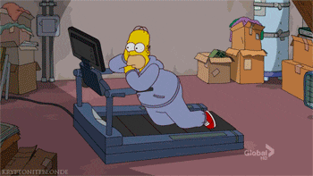
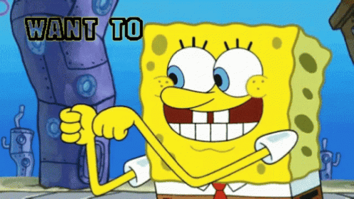
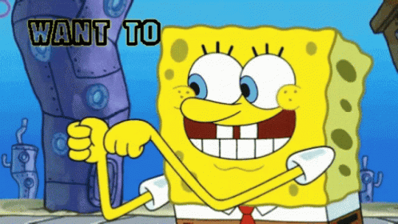
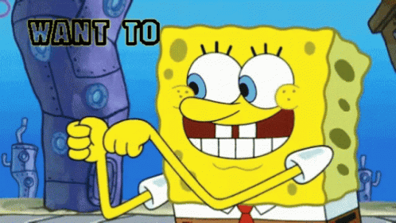

(위치) 위치는 서울시 개봉동 개봉산 안쪽에 위치해 있으며 개봉역에서 구로 올레길을 따라 올라가다 보면 거의 끝쪽에 위치해 있는 것을 발견할수 있다 (설명) 기구는 대체로 관리가 잘 되어있다 근력 웨이트 운동에 필요한 각종 기구들이 잘 구비되어있고 하체 가슴 어깨 등 운동 기구와 프리웨이트가 가능한 바벨과 덤벨도 갖춰져 있다
개웅산 산스장
지도
스카이뷰


 
